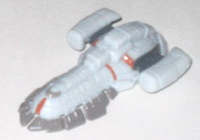

Unlike the other toys
in the first two waves of the Beast Wars 10th Anniversary toyline, 10th
Anniversary Optimus Primal is a brand new mold with an interesting history.
According to the Transformers toy designers, the mold was originally designed
to be used in the mainline, Cybertron, as a new "Jungle Planet" version
of
Optimus Prime
, and the design eventually
wound up as a homage to Optimus Primal, but not the actual character. Well,
then came along the idea for the Beast Wars 10th Anniversary toyline, and
Hasbro decided to release the mold in the 10th Anniversary line first in
colors that were close to the original
Optimus
Primal's
. In fact, with the exception of a few minor liberties taken
with the hoverboard colors, and the placement of some of the colors, the
main scheme is spot-on Optimus Primal, with the exact shade of each color
being used again for this toy. It's pretty cool, and despite the toy's
obvious differences from the initial version of Optimus Primal, it makes
the homages even more obvious. (The red toes I could've done without, though,
those look a tad gaudy.) I also am not too fond of the fact his upper and
lower robot legs (or gorilla arms) are half gray and half either black
of white. It's a rather abrupt transition between the two colors on those
parts, and keeping the upper legs a solid white and the lower legs a solid
black would've worked better, in my view. One other oddity is that Primal's
Maximal symbol is, of all things, painted on the left side of his rear
end, which is rather odd...
Optimus Primal's beast
mode definitely has the Cybertron aesthetic, with a very techno-organic
feel. The mold detailing is magnificent, with fur, technorganic "muscle",
and tubing covering every square centimeter of Primal's body. In this way,
this version of Primal is kind of an amalagamation of his original form,
his
Beast Machines
form, and his
Transmetal
form (because of the hoverboard). There are two minor beefs I have with
said detailing, though-- for one, Primal's gorilla face looks just plain
ugly. The eyes look a little TOO old and battle-weary, and he has a pig
snout. The gorilla chest is also very muscular and flat-chested, which
is odd considering how otherwise accurate the proportions are to a real
gorilla. There are no real robot extras to speak of in this mode, though
the back end of the butt isn't quite as solid-looking as I'd like-- if
you'll excuse the wording, there's a pretty obvious hole back there. One
other, minor thing about Primal's gorilla mode is that his front hands
aren't articulated at all. I realize that they become the robot mode feet,
but even a little thumb articulation would've been appreciated, and there's
nothing inherent in the transformation that would have prevented such movement.
Primal has pretty standard articulation for a gorilla in this mode-- he
can move at the shoulders, elbows, wrists, hips, knees, and his four fingers
on each of his face feet can move as one while the side toe can move by
itself on a ball joint. Primal's accessory is a big ol' hoverboard for
him to surf on in gorilla mode, though it should be noted that he can ONLY
surf on it in gorilla mode-- the pegs on the top of the board only fit
into holes in his gorilla feet, while his robot feet have no such holes,
which is a bit of a bummer considering that he can't really face towards
the front of the board in his gorilla form with both feet planted on the
board. The hoverboard itself contains Optimus' Cyber Key gimmick, since
he was designed as a Cybertron toy first, remember. Insert his key into
a slot at the back of the board, and part of the board slides out and back,
revealing a trigger for a missile launcher at the front of the board!
Even though his beast
mode is pretty good, Primal's robot mode is where the toy really shines.
His proportions are perfect, his gorilla kibble is all tucked behind his
head and out of the way, and he has very good articulation that carries
over from the beast mode, with the addition of head movement as well--
heck, because his thumbs are on a ball joint, he's the only Transformer
mold to date that can give a thumbs up! The detailing on his chest has
the same general design as his original form, but with a bit of a technorganic
flair added. His head design is also great, with the standard "flipped-down
faceplate" design Primal's original form had, but his head's a bit bulkier
and a bit more technorganicky. I also noticed that he has his old-fashioined
jet pack design molded into his upper back in this mode-- a great nod to
his original and Beast Machines forms! His chest does stick out just a
tad too much from the rest of his body, however, so it looks a little odd
if you look at him from a side view. His hoverboard-turned-weapon accessory
is rather cumbersome in this mode as well-- he can hold it, but it's nearly
as big as he is, and he has a hard time staying balanced with that big
thing hoisted over his shoulder.

Primal comes with a
miniature replica of the Maximal's ship, the Axalon. It's very detailed,
and spot-on when compared to the show, but it's just one solid piece of
plastic without any features, not even a landing gear. So, though it does
have some "geeky fan" value, it doesn't really have any playability. Primal
also comes with a mini-sized version of IDW's Beast Wars #1 comic in its
entirety, but if you already have the first comic it's useless, and you'd
have to buy the other three comics in the miniseries to complete the story
anyways.
10th Anniversary Optimus
Primal is a great mold-- he's been scorned by a large portion of the fandom
for some reason, but I can't find out why for the life of me. He's one
of the most underrated toys of the year, as both of his modes are great,
though he's not completely flawless. The extras that Primal comes with
are rather weak and it's questionable whether they're worth the five extra
bucks you have to pay to get the 10th Anniversary version over the differently-colored
Cybertron version
. If you're a HUGE Beast
Wars fan and absolutely MUST have Primal in his show-accurate colors and
a miniature Axalon, than this version of the mold is highly recommended.
If not, you might want to go for the Cybertron version instead, which is
$5 cheaper.
Review by Beastbot